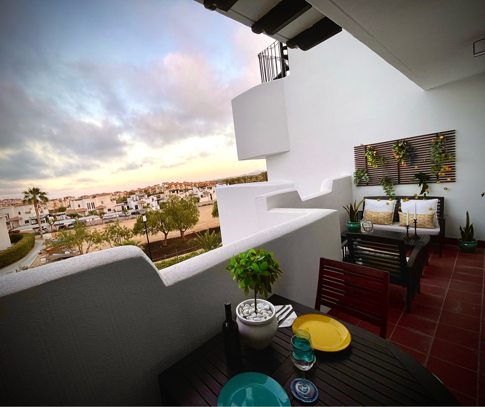
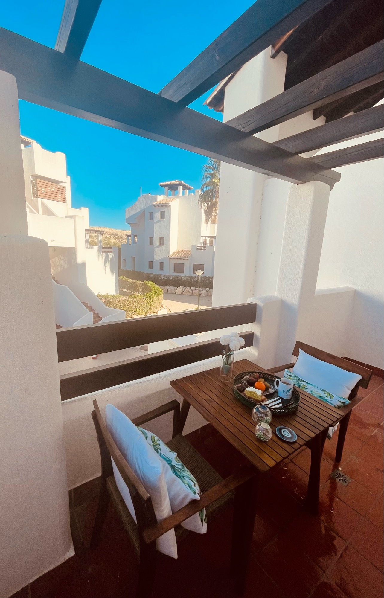
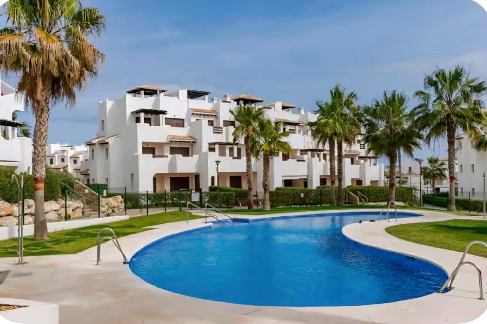
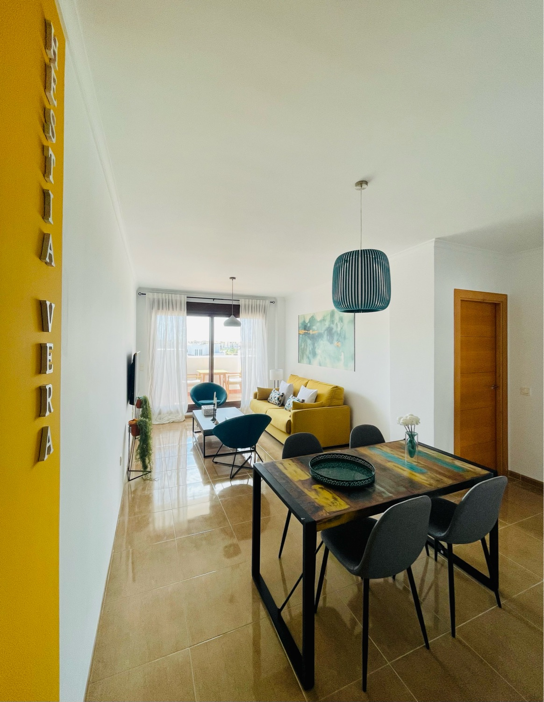
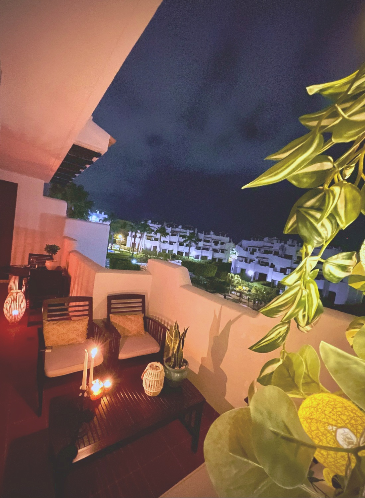
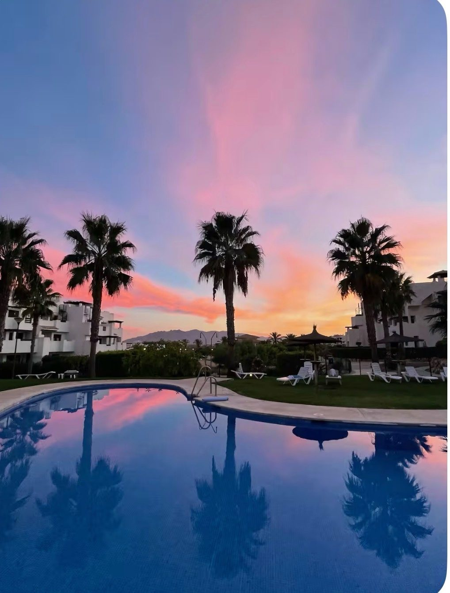

Hestía · Vera Playa
Salinas
H
Alex y Fran
· Hestía
Salinas
Alex y Fran
Tu casa en Vera Playa
Hestía
Salinas
Reserva directa, 0% comisiones
Respuesta en minutos
Mascotas bienvenidas
hestiayourhome.com
September in Vera Playa, direct from your hosts.